품질경영기사 (2014-03-02 기출문제)
1과목: 실험계획법
1. 23형 교락법 실험에서 A×B효과를 블록과 교락시키고 싶은 경우 실험을 어떻게 배치해야 하는가?
- 블록 1 : a, ab, ac, abc 블록 2 : (1), b, c, bc
- 블록 1 : (1), ab, c, abc 블록 2 : a, b, ac, bc
- 블록 1 : (1), ab, ac, bc 블록 2 : a, b, c, abc
- 블록 1 : b, ab, bc, abc 블록 2 : (1), a, c, ac
(정답률: 74%)

2. 다음과 같은 LS(27)형 직교배열표에서 D와 교락되어 있는 요인은?
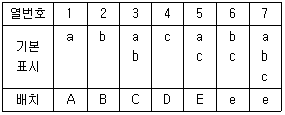
- ABCD, AE, BCE
- AC, ABDE, CDE
- AB, ACDE, BDE
- BC, DE, ABCDE
(정답률: 64%)
3. 선형식
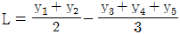
의 단위수 D는 얼마인가?- 1/36
- 1/6
- 13/36
- 5/6
(정답률: 62%)
4. 단순회귀 분산분석에서 잔차의 불편분산Vyㆍx 의 값은? (단,
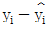
는 1차 회귀에 의한 잔차이다.)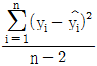
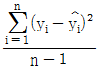
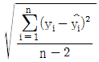
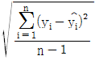
(정답률: 43%)
5. 24형 실험에서 1/2 반복만 실험하기 위해 일부실시범을 이용하였다. 그 결과 아래와 같은 블록을 얻었다. 선택한 정의대비는?
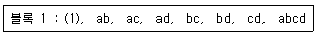
- AB
- ABC
- BCD
- ABCD
(정답률: 68%)
6. 어떤 화학물질을 촉매반응시켜 촉매(A) 2종류, 반응온도(B) 2종류, 원료의 농도(C) 2종류로 하여 23요인실험으로 합성률에 미치는 영향을 검토하여 다음의 표와 같은 데이터를 얻었다. B의 주 효과는 얼마인가?
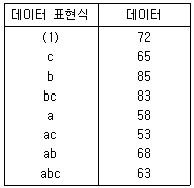
- 3.19
- 4.75
- 6.38
- 12.75
(정답률: 58%)
7. 그림에서 나타내고 있는 방격(square)들에 관한 설명으로 옳지 않은 것은?
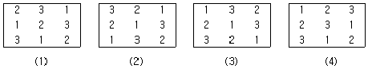
- 방격 (1)과 (2)는 서로 직교하고 있다.
- 방격 (2)와 (3)은 서로 직교하고 있다.
- 방격 (1)과 (4)는 서로 직교하고 있지 않다.
- 방격 (2)와 (4)는 서로 직교하고 있지 않다.
(정답률: 56%)
8. 다음 중 아래에서 다구찌 방법의 특징과 관련이 없는 항목은?
- SN비
- 샘플링검사
- 손실함수
- 직교배열표
(정답률: 55%)
9. 모수인자 A, B의 수준수가 각각 l, m이고, 반복수가 r회인 이원 배치실험에서 요인 A의 평균제곱 VA의 기대값은?
- σE2+lmσA2
- σE2+lrσA2
- σE2+mrσA2
- σE2+lmrσA2
(정답률: 74%)
10. 로트간 또는 로트 내의 산포, 기계간의 산포, 작업자간의 산포, 측정의 산포 등 여러 가지 샘플링 및 측정의 정도를 추정하여 샘플링 방식을 설계하거나 측정방법을 검토하기 위한 변량인자들에 관한 실험설계 방법으로 가장 적합한 것은?
- 교락법
- 지분실험법
- 라틴방격법
- 요인배치법
(정답률: 61%)
11. 난괴법에 대한 설명으로 가장 거리가 먼 것은?
- 제곱합의 계산은 반복없는 이원배치의 모수모형과 동일하다.
- 1인자는 모수이고 1인자는 변량인 반복이 없는 이원배치 실험이다.
- 인자 B가 변량인자이면, σB2의 추정값을 구하는 것은 의미가 없다.
- 인자 A가 모수인자, 인자 B가 변량인자이면
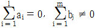
이다.
(정답률: 60%)
12. 인자 A가 4수준, 3회 반복인 일원 배치실험으로 분산분석을 한 결과, SA = 2.96, ST = 4.29일 때 인자 A의 순변동은 약 얼마인가?
- 2.295
- 2.461
- 3.625
- 3.791
(정답률: 49%)
13. 실험의 관리상태를 알아보는 방법으로 오차의 등분산 가정에 대한 검토방법에 속하지 않는 것은?
- Hartley의 방법
- Satterthwaite의 방법
- Bartlett의 방법
- R 관리도에 의한 방법
(정답률: 58%)
14. 계수형 이원배치 실험의 분산분석표가 아래와 같을 때 요인 B의 F0 값은 약 얼마인가? (단, 풀링은 고려하지 않는다.)
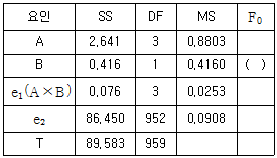
- 16.443
- 4.586
- 3.583
- 0.280
(정답률: 53%)
15. L2713형 선점도에서 A는 1열, B는 5열, C는 2열에 배치할 경우 B×C 교호작용은 어느 열에 배치해야 하는가?
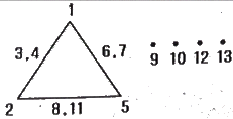
- 3열, 4열
- 6열, 7열
- 8열, 11열
- 9열, 12열
(정답률: 80%)
16. 분할법에 관한 설명으로 옳지 않은 것은?
- 실험실시시 완전랜덤화가 불가능한 경우에 사용한다.
- 1차 단위 오차 자유도가 2차 단위 오차자유도보다 작다.
- 일반적으로 2차 단위 인자가 1차 단위인자보다 정도 높게 추정된다.
- 1차 단위 인자에 대해서는 다원배치법의 실험을 하는 것보다 일반적으로 소요되는 원료의 양을 증대시킨다.
(정답률: 41%)
17. 모수모형 일원배치법의 데이터 구조를 xij = μ+ai+eij라고 할 때, 옳지 않은 것은? (단, i = 1, 2, …, l 이며, j = 1, 2, …, m 이다.)
- E(ai) = ai
- V(ai) ≠ 0
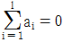
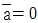
(정답률: 63%)
18. 반복이 없는 삼원배치법(모수모형)의 분산분석 결과 A, B, C, A×C만 유의한 경우 3인자 수준조합에서 신뢰구간 추정시 유효반복수를 구하는 식으로 옳은 것은? (단, 인자 A, B, C의 수준수는 각각 l, m, n이다.)
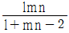
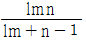
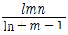
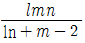
(정답률: 46%)
19. 데이터 분석시 발생한 결측치의 처리방법으로 옳지 않은 것은?
- 될 수 있으면 한번 더 실험하여 결측치를 메꾸는 것이 가장 좋다.
- 일원배치법인 경우 결측치를 무시하고 그대로 분석한다.
- 반복없는 이원배치법인 경우 Yates의 방법으로 결측치를 추정하여 대체시킨다.
- 반복있는 이원배치법인 경우 결측치가 들어있는 조합에서의 나머지 데이터들 중 최대값으로 결측치를 대체시킨다.
(정답률: 60%)
20. 다음은 인자 A를 4수준, 인자 B를 3수준으로 하여 반복 2회의 이원배치법으로 실험한 결과이다. 이에 대한 설명으로 옳지 않은 것은? (단, 인자 A, B는 모두 모수인자이다.)
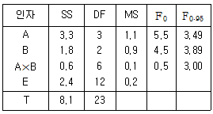
- 유의수준 5%로 인자 A와 B는 의미가 있다.
- 교호작용 A×B는 유의하지 않으며 1보다 작으므로 기술적 풀링을 검토할 수 있다.
- 풀링을 할 경우 오차분산은 교호작용 A×B와 오차항 E의 분사의 평균, 즉 0.15가 된다.
- 모평균의 점추정치는 인자 A, B가 유의하므로
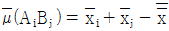
로 추정된다.
(정답률: 60%)
2과목: 통계적품질관리
21. X의 분포가 N(64,16)일 때 P(X≥X0) = 0.95이다. X0의 값은 얼마인가? (단, v0.95 = 1.645, v0.975 = 1.96 이다.)
- 56.16
- 57.42
- 70.58
- 71.84
(정답률: 41%)
22. 모집단의 분산 σ2을 추정하는데 아래와 같은 s2식을 쓴다. 옳지 않은 것은? (단, yi : i = 1 … n는 측정치,
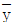
: 평균치)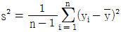
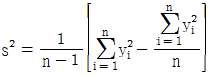
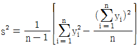
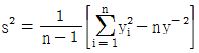
(정답률: 59%)
23. 아래 자료로서 X 관리도의 UCL을 구하면? (단, 합리적인 군으로 나눌 수 있는 경우이다.)
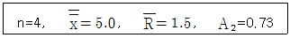
- 5.⑤
- 6.10
- 6.46
- 7.19
(정답률: 42%)
24. KS Q 2859-3:2010 계수치 샘플링검사 절차 - 제3부 : 스킵로트 샘플링검사 절차에서 공급자 책임으로 옳지 않은 것은?
- 공급자는 제조방법 또는 검사방법의 변경, 또는 그 제품의 생산에 관련하는 공구, 게이지 또는 원재료의 개량 혹은 시 방변경을 하였을 때는 검사기능에 통지하여야 한다.
- 공급자는 불합격 로트를 발견하면 즉시 선별하여 부적합이 없는 로트를 입고하여야 한다.
- 공급자는 원재료가 새로운 리스트번호, 도면번호 또는 시방서에 따라서 최초로 제조되었을 때는 언제라도 검사기능에 통지하여야 한다.
- 공급자는 시방서번호, 리스트 또는 도면번호, 계약 또는 구입주문번호, 고객, 목적지, 출하량을 포함한 리스트를 검사기능에 공급하여야 한다.
(정답률: 54%)
25. p관리도에서 시료의 크기와 관리한계에 대한 설명으로 틀린 것은?
- 관리한계는 시료의 크기에 영향을 받는다.
- 관리한계의 폭은
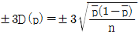
을 따른다. - 시료의 크기가 커질수록 관리한계의 폭은 커진다.
- 시료의 크기가 다를 경우 관리한계선에 요철이 생긴다.
(정답률: 70%)
26. 제품의 품질 특성치의 측정치가 3, 4, 2, 5, 1, 4, 3, 2로 주어져 σ2에 관한 95% 신뢰구간을 구했더니 0.75 ≦ σ2 ≦ 7.10이였다. 귀무가설 H0 : σ2 = 9, 대립가설 H1 : σ2 ≠ 9에 관하여 유의수준 a = 0.⑤로 검정하면 귀무가설(H0)은?
- 채택한다.
- 기각한다.
- 보류한다.
- 기각해도 되고 채택해도 된다.
(정답률: 69%)
27. 아래 중 OC 곡선에서 소비자 위험을 가능한 한 작게 하는 샘플링 방식은?
- 샘플의 크기를 크게 하고 합격판정개수를 크게 한다.
- 샘플의 크기를 크게 하고 합격판정개수를 작게 한다.
- 샘플의 크기를 작게 하고 합격판정개수를 크게 한다.
- 샘플의 크기를 작게 하고 합격판정개수를 작게 한다.
(정답률: 57%)
28. X = (x - 10) × 10, Y = (y - 70) × 100 으로 수치변환하여 X와 Y의 상관계수를 구했더니 0.5이었다. 여기서 x와 y의 상관계수는 얼마인가?
- 0.0⑤
- 0.⑤
- 0.5
- 5.0
(정답률: 55%)
29. 다음 중 관리도의 사용목적에 해당되지 않는 것은?
- 공정해석
- 공정관리
- 표본 크기의 결정
- 공정이상의 유무 판단
(정답률: 75%)
30. 공정해석을 위한 특성치를 선정할 때의 주의 사항으로 옳지 않은 것은?
- 기술상으로 보아 공정이나 제품에 있어서 중요한 것을 택한다.
- 해석을 위한 특성과 관리를 위한 특성을 반드시 일치시킬 필요는 없다.
- 수량화하기 쉬운 것을 택한다.
- 해석을 위한 특성은 되도록 적게 한다.
(정답률: 60%)
31. 어느 회사에 부품을 납품하는 협력업체의 품질이 점점 나빠지고 있다. 이 협력업체의 품질을 조사하기 위하여 제조 공정으로부터 n = 10의 샘플을 취하였더니 x = 3개의 부적합품이 발견되었다. 이 때 모 부적합품률을 추정하기 위한
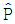
의 식은? (단, N은 로트의 크기이다.)- x/n
- x-n
- x/N
- x-N
(정답률: 74%)
32. 크기 N의 로트를 m=M층으로 나누었을 때 각 층의 크기가 모두 같아서
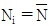
이고, 각 층에서의 2차 샘플링 개수가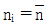
로서 같은 경우의 층별 샘플링에 관한 설명으로 옳지 않은 것은? (단, σb2=층간분산, σw2=층내분산)- 규모가 작은 각층(서브 로트)에서 시료를 취함으로 랜덤 샘플링이 용이한 것이 장점이다.
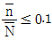
인 경우에 추정 정밀도인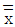
의 분산은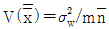
이다. (단, m은 층의 수)- σb2＞0 일 경우 단순랜덤 샘플링에 비해 추정 정밀도가 나빠진다.
- Ni의 크기가 다를 때 각층의 시료의 크기 ni를 층의 크기 Ni에 비례하여 취하는 것을 층별 비례샘플링이라 한다.
(정답률: 51%)
33. KS Q 0001:2013 계수 및 계량 규준형 1회 샘플링검사-제3부: 계량규준형 1회 샘플링 검사 방식(표준편차기지)에서 로트의 평균치보증(상한합격 판정치
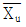
의 경우)에 관한 OC 곡선을 표기하는 식은?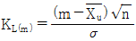
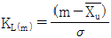
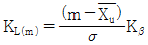
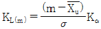
(정답률: 52%)
34. σ를 모르는 경우에는 t검정을 한다. 임의의 A, B 두 모평균의 차의 검정을 할 때 t분포의 자유도는 얼마인가? (단, nA = 10, nS =15이며, 두 집단의 분산은 등분산성이 성립한다.)
- 21
- 22
- 23
- 24
(정답률: 66%)
35. 확률변수 X가 다음의 분포를 가질 때 Y의 기댓값을 구하면? (단, Y = (X-1)2이다.)
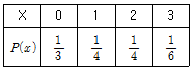
- 1/2
- 3/5
- 3/4
- 5/4
(정답률: 48%)
36. 재가공이나 폐기 처리비를 무시할 경우, 부적합품 발생으로 인한 손실비용(무검사 비용)을 옳게 표시한 것은? (단, N은 전체 로트 크기, a는 개당검사비용, b는 개당 손실비용, p는 부적합품률이다.)
- aN
- bN
- apN
- bpN
(정답률: 80%)
37. 600명으로 이루어진 어떤 학년의 학생들의 키는 평균 175cm, 분산 36cm인 정규분포를 따른다. 이 때 190cm 이상인 학생들은 몇 명인가? (단,
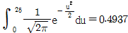
이다.)- 3명
- 5명
- 7명
- 9명
(정답률: 48%)
38.
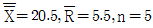
일 때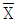
관리도의 UCL과 LCL을 구하면 약 얼마인가?(단, d2 = 2.326, d3 = 0.864이다.)- UCL=25.⑤ LCL=15.95
- UCL=22.77 LCL=18.23
- UCL=22.43 LCL=18.57
- UCL=23.67 LCL=17.33
(정답률: 56%)
39.
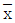
관리도에서 관리한계선을 크게 했을 때, 옳은 것은?- 검출력(1-β)은 커진다.
- 2종의 과오(β)는 작아진다.
- 1종의 과오(α)는 작아진다.
- 신뢰율(1-α)은 작아진다.
(정답률: 58%)
40. 다음 ( )에 알맞은 말을 [보기]에서 선택하여 순서대로 나열한 것은?
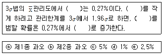
- ⓐ-ⓑ-ⓐ-ⓒ
- ⓐ-ⓐ-ⓐ-ⓒ
- ⓐ-ⓑ-ⓐ-ⓔ
- ⓐ-ⓐ-ⓐ-ⓔ
(정답률: 59%)
3과목: 생산시스템
41. 미리 정해 놓은 기본동작별 시간자료로부터 작업을 구성하는 동작들의 시간을 합성하여 표준시간을 결정하는 작업측정기법은?
- 시간연구법
- PTS법
- 워크샘플링법
- 메모모션법
(정답률: 54%)
42. 공정수명주기에 의한 생산시스템의 분류기준으로 유형이 다른 것은?
- 프로젝트 생산
- 개별 생산
- 조립 생산
- 예측 생산
(정답률: 41%)
43. 긴급률(Critical Ratio)에 대한 설명으로 옳지 않은 것은?
- 긴급률은 잔여납기일수를 잔여작업일수로 나눈 값이다.
- CR ＞ 1.0이면 작업여유가 있다.
- CR = 1.0이면 계획대로 완료할 수 있다.
- 긴급률의 값이 큰 작업부터 먼저 처리한다.
(정답률: 68%)
44. 간트차트에 대한 설명 중 옳지 않은 것은?
- 일정계획변경에 탄력성이 적다.
- 계획과 결과를 명확하게 파악할 수 있다.
- 작업의 성과를 작업장별로 파악할 수 없다.
- 사용이 간편하고 비용이 적게 든다.
(정답률: 63%)
45. 다음 네트워크에서 활동 F의 가장 빠른 착수시간(ES)와 가장 빠른 완료시간(EF)은 얼마인가?
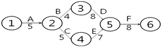
- ES=18, EF=26
- ES=17, EF=25
- ES=18, EF=25
- ES=17,EF=26
(정답률: 68%)
46. 아래 표와 같은 내용을 갖는 조립라인에서 사이클 타임(c)과 최소의 이론적 작업장수(Nt)를 구하면 얼마인가? (단, 목표생산량은 120개/일 이고, 총 작업시간은 420분/일 이다.)
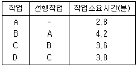
- c = 3.5, Nt = 5
- c = 3.5, Nt = 6
- c = 4.2, Nt = 5
- c = 4.2, Nt = 6
(정답률: 37%)
47. PERT/CPM 기법에 관한 설명 중 옳지 않은 것은?
- 활동시간이 확률적인 경우에는 PERT를 사용한다.
- CPM에서는 활동시간뿐 아니라 비용도 같이 고려한다.
- PERT에서는 각 활동시간이 정규분포를 따른다고 가정하여 기대치와 분산을 추정한다.
- CPM에서 시간단축을 하기 위해서는 주 경로상의 활동 중 비용구배가 가장 작은 활동을 택하여 단축한다.
(정답률: 46%)
48. 아래 중 공정별(기능별) 배치의 내용으로 가장 적합한 것은?
- 소품종 대량생산방식에 적합하다.
- 흐름생산 방식이다.
- 제품중심의 설비배치이다.
- 범용설비를 이용한다.
(정답률: 68%)
49. 제품별 배치에 있어서 각 작업장에 작업 부하를 적절하게 할당하여, 각 작업장에서 작업시간의 균형을 이루도록 하는 활동은?
- 작업우선순위 결정
- 라인밸런싱
- 부하결정
- 일정계획
(정답률: 67%)
50. 시계열분석에서 수요가 지속적으로 상승 또는 하강하는 형태를 보이는 변동은?
- 추세(trend)변동
- 순환(cycle)변동
- 계절변동
- 불규칙변동
(정답률: 72%)
51. MRP 시스템 운영에 필요한 기본요소 중에서 최종품목 한 단위 생산에 소요되는 구성품목의 종류와 수량을 명시한 것은?
- 주생산일정계획
- 자재명세서
- 재고기록철
- 발주점
(정답률: 73%)
52. 평균시간 모형에 따른 학습률이 75%인 공정에서 100개의 제품을 생산하였다. 첫 번째 제품을 생산하는데 80시간이 걸린다면, 100째 제품의 생산소요시간은 약 몇 시간인가?
- 11.83시간
- 27.68시간
- 33.92시간
- 45.31시간
(정답률: 29%)
53. 생산계획을 위한 제품조합에서 A 제품의 가격이 2000원, 직접재료비 500원, 외주가공비 200원, 동력 및 연료비가 50원 일 때 한계이익률은 얼마인가?
- 37.5%
- 62.5%
- 65.0%
- 75.0%
(정답률: 62%)
54. A사는 연간 40000개의 품목을 개당 1000원에 구매하고 있다. 이 품목의 수요가 일정하고, 회당 주문비용이 2000원, 연간 단위당 재고유지비용이 40원 이라면, 경제적 주문량(EOQ)과 최적주문횟수는?
- 2000개, 16회
- 2500개, 16회
- 2000개, 20회
- 2500개, 20회
(정답률: 68%)
55. 어느 작업자의 시간연구결과 평균작업시간이 단위당 20분이 소요되었다. 작업자의 레이팅계수는 95%이고, 여유율은 정미시간의 10%일 때, 표준시간은 약 얼마인가?
- 14.5분
- 16.4분
- 18.1분
- 20.9분
(정답률: 67%)
56. A회사에서 생산되는 어느 제품의 연간수요량은 4000개이며, 연간 생산능력은 8000개이다. 1회 생산시 준비비용은 2000원, 연간단위당 재고유지비용은 20원일 때, 경제적 생산량(EPQ)은 약 몇 개인가?
- 1064.9
- 1164.9
- 1264.9
- 1364.9
(정답률: 48%)
57. 동작경제의 원칙 중 신체사용의 원칙이 아닌 것은?
- 두 손의 동작은 같이 시작하고 같이 끝나도록 한다.
- 두 팔의 동작은 동시에 서로 반대방향으로 대칭적으로 움직이도록 한다.
- 휴식시간을 제외하고는 양손이 동시에 쉬지 않도록 한다.
- 가급적이면 낙하투입장치를 사용한다.
(정답률: 61%)
58. 단일 설비에서 처리하는 주문 A, B, C의 처리시간과 납기가 아래의 표와 같다. 최소처리시간법(SPT : Shortest Processing Time)과 최단납기일법(EDD : Earliest Due Date)에 의해 산출한 작업순서와 평균납기지연시간(일)은?
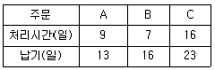
- SPT : A-B-C(3일), EDD: B-A-C(4일)
- SPT : B-A-C(3일), EDD: A-B-C(4일)
- SPT : A-B-C(4일), EDD: B-A-C(3일)
- SPT : B-A-C(4일), EDD: A-B-C(3일)
(정답률: 50%)
59. 도요타 생산방식의 운영에 대한 설명으로 옳지 않은 것은?
- 조달기간을 줄이기 위해 생산준비시간을 축소한다.
- JIT 생산을 유지하기 위해 간판 방식을 적용한다.
- 밀어내기식의 자재흐름방식을 추구한다.
- 작업의 유연성을 위해 다기능 작업자 제도를 실시한다.
(정답률: 74%)
60. 재고의 기능에 따른 분류 중 경기변동, 계절적 수요변동에 대비한 재고유형은?
- 주기재고(Cycle Inventory)
- 예상재고(Anticipation Inventory)
- 투기재고(Speculative Inventory)
- 수송재고(Transportation Inventory)
(정답률: 51%)
4과목: 신뢰성관리
61. 와이블분포의 신뢰도함수
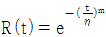
를 이용하면 사용시간 t = η에서 m의 값에 관계없이 R(η) = e(-1), F(η) = 1-e(-1) = 0.632임을 알 수 있다. 이 때 와이블분포를 따르는 부품들의 약 63%가 고장나는 시간 η는 무엇인가?- 평균수명
- 특성수명
- 중앙수명
- 노화수명
(정답률: 64%)
62. 시스템의 고장을 발생시키는 사상과 그 원인과의 인과관계를 논리 관계로 설명하는 게이트나 사상 기호를 나뭇가지 모양의 그림으로 나타내고 이에 의거 시스템의 고장 확률을 구함으로서 문제가 되는 부분을 찾아내는 기법은?
- FMEA
- FTA
- MTTR
- MTTF
(정답률: 72%)
63. 보전시간 t에 관한 보전도함수 M(t) = 1-e-1.5t일 때 수리율 μ(t)는?
- 0.27
- 0.43
- 0.67
- 1.50
(정답률: 57%)
64. 신뢰도가 0.9인 부품과 0.8인 부품이 두 부품 중 어느 하나라도 고장이 나면 기능을 발휘할 수 없도록 구성되어 있다. 이 기기의 신뢰도는?
- 0.68
- 0.72
- 0.89
- 0.98
(정답률: 72%)
65. 와이블분포의 특징으로 바른 것은?(단, m은 형상모수이다.)
- m＜1 이면 CFR
- m＞1 이면 DFR
- m=1 이면 CFR
- m=1 이면 IFR
(정답률: 63%)
66. MTTF가 50000시간인 세 개의 부품이 병렬로 연결된 시스템의 MTTF는 약 몇 시간인가?
- 13333.33시간
- 18333.33시간
- 47666.47시간
- 91666.67시간
(정답률: 70%)
67. Y 시스템의 고장률이 시간당 0.0⑤라고 한다. 가용도가 0.990 이상이 되기 위해서는 평균수리기간은 약 얼마인가?
- 0.4957시간
- 0.9954시간
- 2.0202시간
- 2.5252시간
(정답률: 53%)
68. 그림의 FT(Fault Tree)도에서 시스템이 고장 날 확률은? (단, 숫자는 각 요소의 고장확률이다.)
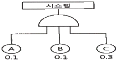
- 0.003
- 0.040
- 0.043
- 0.500
(정답률: 68%)
69. 다음 중 전체구간에서 “단위시간당 어떤 비율로 고장이 발생하고 있는가”를 뜻하는 신뢰성 척도를 나타낸 것은?(단, R(t)는 신뢰도, F(t)는 불신뢰도, f(t)는 고정밀도함수, λ(t)는 고장률함수 이다.)
(정답률: 41%)
70. 병렬 리던던시(Redundancy) 시스템의 목표 설계 평균수명이 약 41.666시간이 되도록 설계하고자 한다. 고장률이 0.⑤회/1000시간인 부품으로 구성할 때 필요한 부품 수는?
- 1개
- 2개
- 3개
- 4개
(정답률: 54%)
71. 재료의 강도는 평균 50kg/mm2, 표준편차가 2kg/mm2, 하중은 평균 45kg/mm2, 표준편차가 2kg/mm2 인 정규분포를 따른다고 한다. 이 재료가 파괴될 확률은? (단, Z는 표준정규분포의 확률변수이다.)
- Pr (Z ＞ -2.50)
- Pr (Z ＞ 2.50)
- Pr (Z ＞ -1.77)
- Pr (Z ＞ 1.77)
(정답률: 58%)
72. 그림과 같이 4개의 부품이 직렬구조로 연결되어 있는 시스템의 신뢰도는? (단, 각 부품의 신뢰도는 R1, R2, R3, R4이다.)
- R1R2R3R4
- 1-(1-R1)(1-R2)(1-R3)(1-R4)
- 1-R1R2R3R4
- (1-R1)(1-R2)(1-R3)(1-R4)
(정답률: 73%)
73. 수명분포가 지수분포인 20개인 제품을 교체하면서 계속 시험하여 마지막 10번째 고장 나는 시간을 측정하였더니 100시간이 나왔다. 100시간에서의 신뢰도는 얼마인가?
(정답률: 52%)
74. 다음 설명 중 틀린 것은?
- 제품의 사용단계에 있어서는 제품의 신뢰도는 증가하지 않는다.
- 제품의 사용단계에서는 설계나 제조과정에서 형성된 제품의 고유 신뢰도를 될 수 있는 대로 단기간 보존하는 것이다.
- 출하 후의 신뢰성 관리를 위해 중요한 것은 예방보전과 사후 보전의 체계를 확립하는 것이다.
- 예방보전과 수리방법을 과학적으로 설정하여 실시하여야 한다.
(정답률: 59%)
75. FTA(Fault Tree Analysis)에 관한 설명 중 옳지 않은 것은?
- 컴퓨터를 사용하여 실시할 수 있다.
- Boolean대수의 지식이 필요하다.
- 정성적인 해석방법으로만 사용할 수 있다.
- 최상위 고장(top event)으로부터의 하향식 고장해석 방법이다.
(정답률: 63%)
76. 신뢰성 증대를 위한 설계방법이 아닌 것은?
- 부품의 복잡화 설계
- 리던던시(Redundancy) 설계
- 디레이팅(Derating) 설계
- 내환경성 설계
(정답률: 66%)
77. 가속수명시험에 대한 설명으로 틀린 것은?
- 가속요인으로는 전압이나 온도 등이 활용된다.
- 가속시험에서 얻어진 수명을 정상조건으로 환원할 때, 수명추정의 신뢰도는 수명이 지수분포인 경우 가장 높다.
- 가속수명시험은 시험시간을 단축시키기 위해 실시한다.
- 온도가 가속요인일 때, 활용되는 모델로 아레니우스모델(Arrhenius Model)이 있다.
(정답률: 61%)
78. 수명분포가 지수분포인 부품 n개를 수명시험하여 고장품을 교체해 가면서 시험하다가 미리 정한 시간 t0에서의 고장개수가 총 r개일 때 고장률의 추정값은?
- n/rt0
- r/nt0
(정답률: 48%)
79. 신뢰도가 R인 부품 3개가 병렬결합모델로 설계되어 있다. 시스템 신뢰도의 표현으로 옳은 것은?
- 3R
- 3R-3R2+R3
- {1-(1-R)2}+R
- (1-R)3
(정답률: 73%)
80. 평균수명(MTTF)을 나타내는 식으로 옳은 것은? (단, R(t) : 신뢰도, F(t) : 불신뢰도, λ(t) : 고장률, f(t) : 고장확률밀도함수)
(정답률: 52%)
5과목: 품질경영
81. 신제품개발 단계의 품질관리추진에서 가장 효과적인 것은?
- 공정능력지수
- 관리도
- 품질기능전개
- QC공정도
(정답률: 64%)
82. 규격서의 서식 중 규격의 일부로 볼 수 없는 것은?
- 부속서
- 해설
- 비고
- 보기
(정답률: 31%)
83. 분임조 활동 시 주제를 선정하는 원칙으로 옳지 않은 것은?
- 개선의 필요성을 느끼고 있는 문제를 선정한다.
- 장기간에 걸쳐 해결해야 할 중요한 문제를 선정한다.
- 분임조원들의 공통적인 문제를 선정한다.
- 구체적인 문제를 선정한다.
(정답률: 74%)
84. 품질비용의 분류, 집계 목적이 아닌 것은?
- 공정품질의 해석기준으로 활용하기 위해서
- 계획을 수립하는 기준으로 활용하기 위해서
- 품질 예방비용을 줄이기 위해서
- 예산편성의 기초자료로 활용하기 위해서
(정답률: 52%)
85. CP = 1.33 이고 치우침이 없다면 평균 μ에서 규격한계(Su 또는 SL)까지의 거리는 몇 σ인가?
- 2σ
- 3σ
- 4σ
- 6σ
(정답률: 58%)
86. 구멍에 축을 조립하는 부품 끼워 맞추기 중 가장 헐거운 끼워맞춤에 해당 하는 것은?
- 축외경 : ø = 50.000mm 구멍내경 : ø = 50.000mm
- 축외경 : ø = 49.795mm 구멍내경 : ø = 50.0⑤mm
- 축외경 : ø = 50.⑤0mm 구멍내경 : ø = 49.950mm
- 축외경 : ø = 49.895mm 구멍내경 : ø = 50.0⑤mm
(정답률: 70%)
87. TQM 기법으로서 벤치마킹의 장점으로 가장 거리가 먼 것은?
- 자원을 적절히 이용할 수 있고 비용이 최소화된다.
- 경쟁자와 대등하거나 그 이상의 기능을 수행할 수 있어 시장 경쟁에 유리하다.
- 벤치마킹을 통하여 경쟁에 유리한 입지를 유지할 수 있다.
- 최우수 기업의 성과를 통해 내부 구성 원간의 경쟁만을 촉진한다.
(정답률: 79%)
88. 품질관리수법 중 친화도법의 장점이 아닌 것은?
- 새로운 발상을 얻을 수 있다.
- 진척사항의 체크가 용이하다.
- 전원 참여를 촉진할 수 있다.
- 문제를 일목요연하게 정리할 수 있다.
(정답률: 40%)
89. 설계품질이 결정된 후 제품의 제조단계에서 설계품질을 제품화함으로써 실현된 품질은?
- 사용품질
- 시장품질
- 목표품질
- 적합품질
(정답률: 37%)
90. 통계그래프 중 시간에 따라 변화하는 수량과 같은 시계열자료를 나타내는데 적합한 것은?
- 원그래프
- 띠그래프
- 막대그래프
- 꺾은선그래프
(정답률: 70%)
91. 제조물책임(PL) 소송에 관한 설명으로 옳지 않은 것은?
- 보증은 제품이 원래 의도대로 작동할 것이라는 제조사의 약속이다.
- 제조자의 설계, 생산 결함에 대한 배상 책임을 엄격책임이라 한다.
- 사용상의 위험을 충분히 경고하지 않은 경우 과실 책임이 발생할 수 있다.
- 생산자가 계약사항을 위반하는 경우 보증 책임이 발생할 수 있다.
(정답률: 40%)
92. 다음 표준 중 국가표준으로만 구성된 것은?
- GB, DIN, JIS, NF
- KS, JIS, ASTM, ANSI
- KS, DIN, MIL, ASTM
- IS, ISO, DIN, ANSI
(정답률: 63%)
93. 품질교육을 효과적으로 추진하기 위한 준수사항으로 옳지 않은 것은?
- 모든 계층에게 높은 수준의 통계적 기법을 교육시킬 것
- 품질교육을 전사 교육프로그램의 중심에 위치시킬 것
- 모든 계층에 품질교육을 실시함을 원칙으로 할 것
- 품질교육 후에는 사후관리를 원칙으로 할 것
(정답률: 63%)
94. 조직 구성원들 간의 의사소통 효율을 증진시키는 내용이 아닌 것은?
- 정확한 의미의 단어를 선택한다.
- 비정상적인 감정 상태에서의 메시지 송·수신은 가급적 피한다.
- 문서면 문서, 구두면 구두로 전달하는 단일 전달체계를 갖는 것이 좋다.
- 목적지에서 제대로 수신되었는지 확인하기 위하여 메시지를 반복하거나 되돌려 보내는 것이 도움이 된다.
(정답률: 59%)
95. 품질경영을 위한 품질조직에서 중간관리자의 역할이 아닌 것은?
- 품질경영활동 프로그램을 개발
- 품질정보를 수집하고 해석하여 품질 문제를 확인
- 품질분임조 활동의 개선결과를 평가
- 품질방침과 품질목표를 결정
(정답률: 71%)
96. KS 표시 허가를 획득하기 위한 '공장심사'의 심사항목이 아닌 것은?
- 자재품질
- 공정관리
- 제조설비
- 수요예측
(정답률: 74%)
97. 제품 또는 서비스가 품질요건을 만족시킬 것이라는 적절한 신뢰감을 주는데 필요한 모든 계획적이고 체계적인 활동을 무엇이라 하는가?
- 품질보증
- 제품책임
- 품질해석
- 품질방침
(정답률: 73%)
98. 품질관리 담당자의 역할이 아닌 것은?
- 사내 표준화와 품질경영에 대한 계획 및 추진
- 경쟁사 상품 및 부품 품질 비교
- 공정이상 등의 처리, 애로공정, 불만처리 등의 조치 및 대책의 지원
- 품질경영 시스템하의 내부감사 수행 총괄, 승인
(정답률: 54%)
99. (주)한국의 주력상품인 A형 동파이프의 규격은 상한 0.900, 하한 0.500이고, 실제 제조공정에서 생산된 제품의 평균은 0.738이며, 표준편차는 0.0725로 확인되었을 때, 치우침을 고려한 공정능력지수(Cpk) 는 약 얼마인가?
- 0.19
- 0.74
- 0.92
- 1.09
(정답률: 41%)
100. 종업원의 동기부여(Motivation)를 촉진하기 위한 방안과 가장 거리가 먼 것은?
- 직무와 연관된 책임을 확대시키고 타 직무로 정기적 순환 실시
- 고용인의 의사결정 참여
- 규칙 위반을 처벌하기 위해 엄격한 벌칙을 제정
- 개인적인 목표와 조직의 목표를 부합시킴
(정답률: 64%)
"블록 1 : (1), ab, c, abc 블록 2 : a, b, ac, bc"의 경우, A와 B가 둘 다 포함된 abc 조합이 블록 1과 블록 2에 모두 포함되어 균형적으로 분배되어 있다. 또한, A와 B가 각각 블록 내에서 균형적으로 분배되어 있으므로 A×B효과를 블록과 교락시키기에 적합하다.